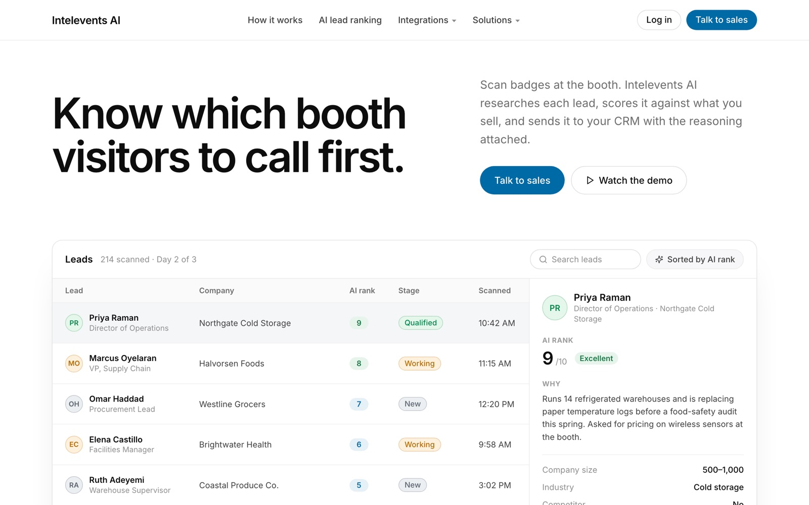
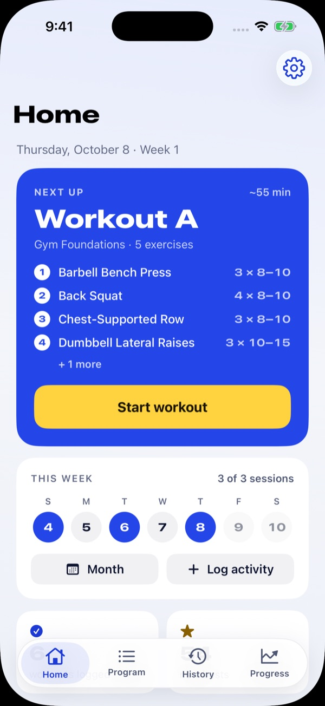
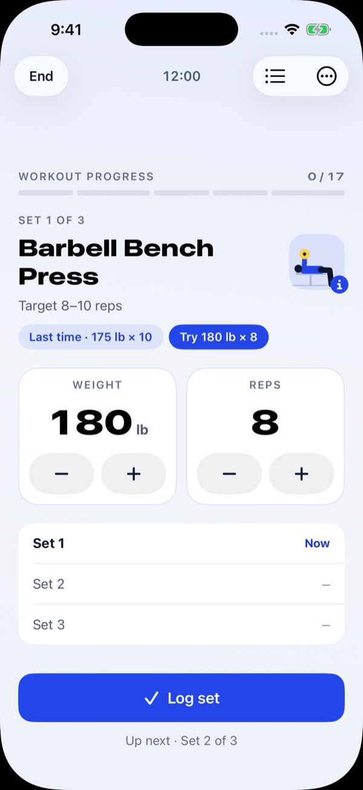
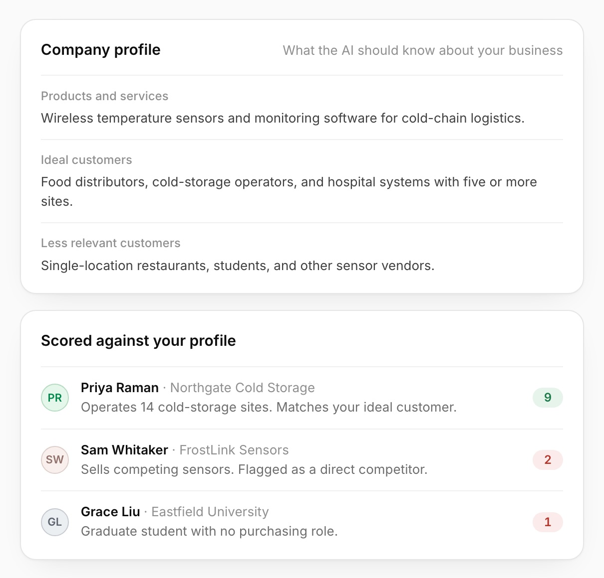
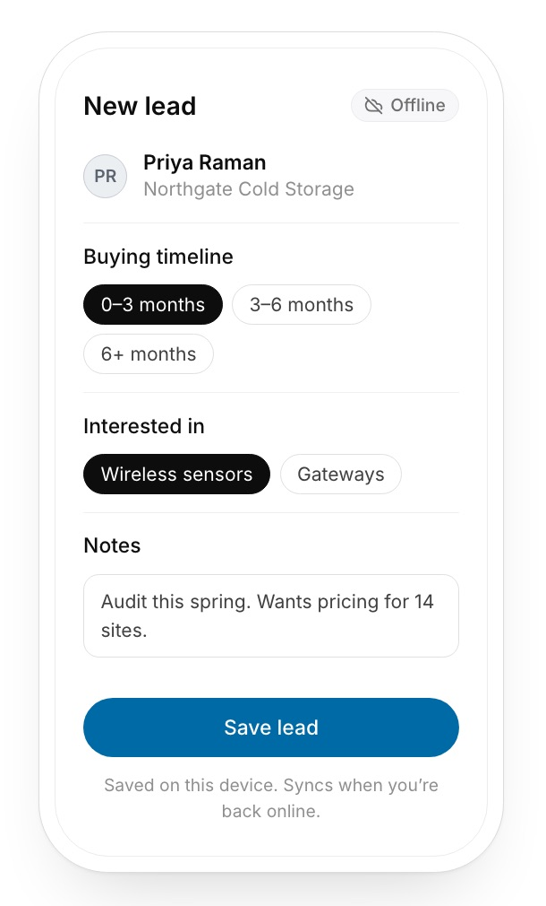
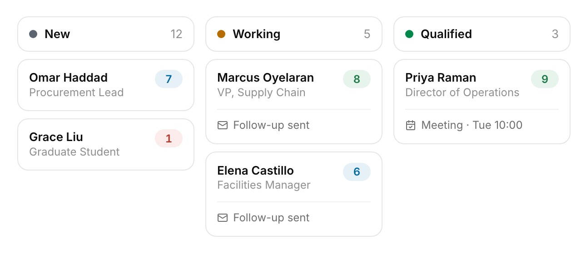
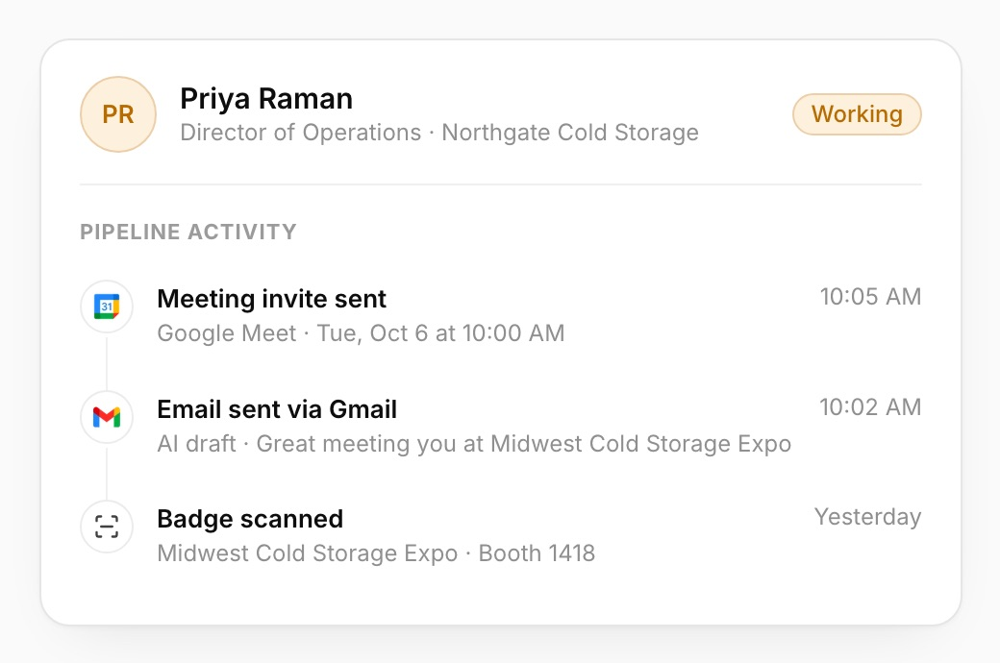
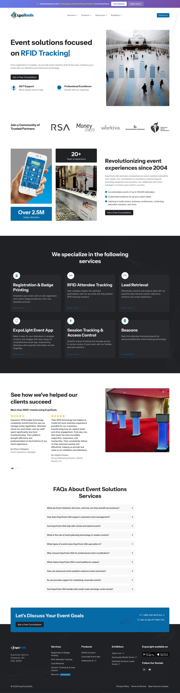
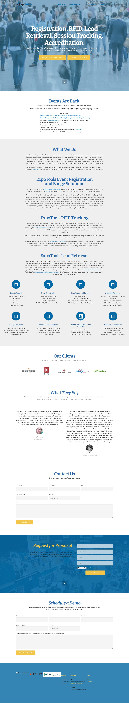
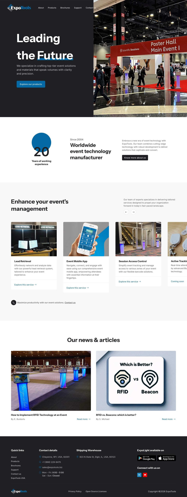

Kirk Patoucheas · Product designer and frontend engineer
AI-first. By design.
I design and build software with AI at every step, from the first sketch to production code. It's not a shortcut I hide. It's how one person ships a whole platform.



AI-first doesn't mean hands-off.
AI is part of every step of how I work, from research to production code. What it changes is how much one person can design, build and test. Taste, architecture and the final call stay with me.
Explore more, faster.
I prototype in real code instead of static mockups, so I can try several directions and keep the one that feels right.
Build with agents.
Claude Code and Codex work alongside me. I set the architecture and the rules, review every change, and keep the tests green.
Ship with judgment.
AI drafts. I decide. The interactions, the edge cases and the details are where I spend the time it saves.
This site was designed and built the same way. The little builders you see around the page are a nod to that.
I designed and built an AI platform. Every screen of it.
On Intelevents AI I owned the whole product surface, from the marketing site to the dashboards, lead tables, pipeline, AI ranking views, CRM integrations, and email and calendar booking. That meant the design decisions, the frontend architecture, and every detail in between.
See how I built it




From WordPress to six-figure deals.
I redesigned and rebuilt every public ExpoTools site, replacing dated WordPress themes with fast, modern pages built to convert. Drag the handle to compare.



LastSet
A strength-training companion that remembers your last set and tells you exactly what to lift next.
See the projectTools I built for myself, and use every day.
Self-hosted projects that started as my own problems.
$30,000 saved.
It emailed me the moment the right used Model 3 went live near me: 5,000 km, with Full Self-Driving already included.
Read the storyThree screens. One number.
My blood sugar on my Mac's menu bar and on Arduino displays at my desk and on my bedroom wall.
Learn moreOne budget, every device.
A web portal and an offline-first iPhone app on one Postgres model, running on my own server.
Learn moreI care how software feels as much as how it works.
I'm a frontend engineer at ExpoTools in Montréal, where I own most of the product surface: dashboards, design tooling, integrations and AI features. I usually end up doing both the design and the build. Outside work it's cars, hardware and home automation, mostly to find out how they work.
- Next.js
- React
- TypeScript
- Angular
- SwiftUI
- Claude Code
- Codex
- Product design